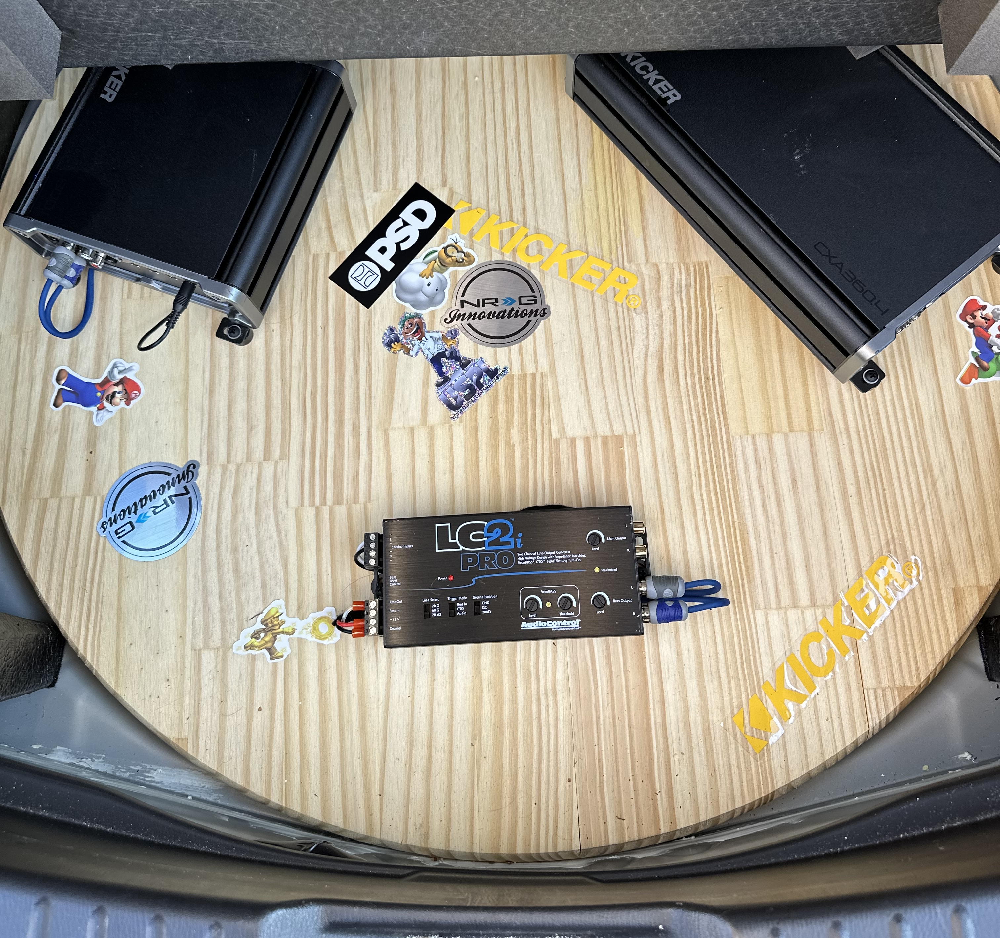

Work

Cellular Sales, Authorized Retailer for Verizon
I currently work at Cellular Sales, an authorized retailer for Verizon, where I’ve been for a little over a year. I started as a general Sales Rep/Account Manager, helping customers with their accounts and finding the right phones and plans.
This past March, I became a store trainer, which has added a new dynamic to my role. Along with my sales responsibilities, I now help guide new hires through their first three months, making sure they understand their tasks and answering any questions they may have. I really enjoy working with my team and helping others succeed.
Best Buy/Geek Squad
Before Cellular Sales, I worked at Best Buy. I started there in 2021 as a Sales Advisor and after about six months, I was promoted to AT&T Vendor Purchasing Leader. In that role, I helped manage vendor products and services, and I did that for about a year. Afterward, I moved to the Geek Squad, where I worked in the install bay for six months. I installed and troubleshot:
- Car Stereos
- Speakers
- Subwoofers
- Remote
- Starts
I enjoyed working with technology and solving problems for customers during my time there.
I've been fortunate to work with great people in both roles, and I’ve made many friends along the way. Each job has taught me valuable skills that I’ve carried into my current role.